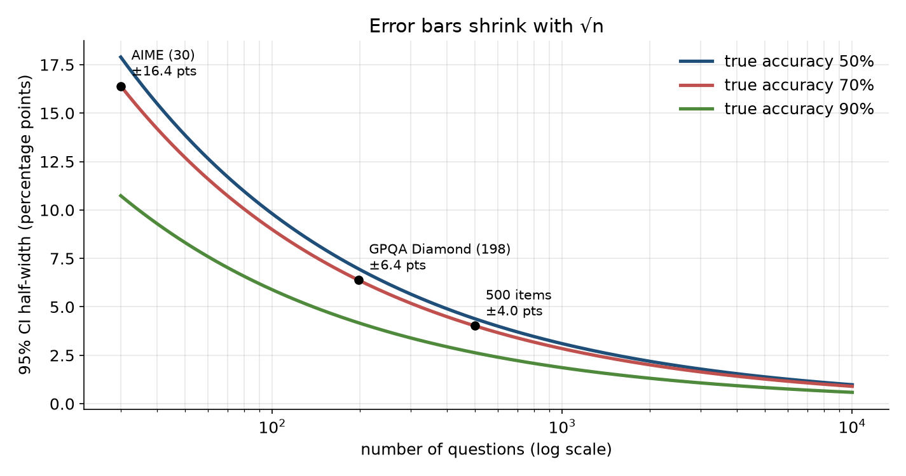

Eval study notes · Coding practice set
Start with the question that sits under every other one in this part of the book. A researcher pings you on a Tuesday morning: the new checkpoint scores 72.0 percent on a 500-question reasoning benchmark, last week’s scored 70.4, and they want to know whether the data-mixture change worked. Before you can say anything useful, you have to be clear about what the number 72.0 actually is. It is not a property of the model in the way that a parameter count is. It is a measurement, taken by asking the model a particular sample of questions, once each, with a particular sampler, and the measurement would come out differently if any of those choices changed. Every statistical tool in the next five chapters is a way of answering one question: how differently?
There are two independent reasons the score wobbles, and it pays to keep them apart in your head because they call for different fixes.
The first is the question sample. The 500 questions in the benchmark are a draw from some much larger space of questions of that type. If someone had written a different 500 questions of the same style and difficulty, the model would have scored a little higher or lower. This is the variance that statisticians mean by “sampling error”, and it is the one that dominates for small benchmarks. You cannot reduce it by rerunning the model; only more questions shrink it.
The second is the model’s own randomness. If you sample at temperature 0.7, or if your inference stack is not bit-for-bit deterministic (it usually is not; batch composition changes floating-point reduction order, which flips a few greedy tokens), then asking the same question twice can give a right answer once and a wrong one the next time. This variance does shrink if you ask each question several times and average. Evan Miller’s paper “Adding Error Bars to Evals” (Anthropic, November 2024) is the clearest treatment of how the two combine, and it is worth reading in full once; this chapter follows its logic.
Treat each question as a coin flip that comes up “correct” with probability equal to the model’s true accuracy p. The score you observe, p̂, is the average of n such flips. The spread of that average across hypothetical reruns of the whole experiment is its standard error:
SE = √( p̂ (1 − p̂) / n )
For your 72.0 percent on 500 questions, that is √(0.72 × 0.28 / 500) = 0.020, or 2.0 percentage points. Notice what this says. A single number reported as “72.0” carries an uncertainty of about two points in each direction from question sampling alone. The previous checkpoint’s 70.4 is well inside that range. You have not yet learned whether the mixture change did anything.
The reason the formula has that shape is worth thirty seconds, because it is what you reconstruct in an interview when you cannot remember the formula. A single coin with probability p has variance p(1 − p), which is largest at p = 0.5 (variance 0.25) and shrinks toward zero as p approaches 0 or 1, because a coin that almost always lands the same way barely varies. Averaging n independent coins divides the variance by n, so the standard deviation of the average falls as 1/√n. That square root is the most important fact in evaluation statistics: to halve your error bars you need four times as many questions. Going from 500 to 2,000 questions takes the 2.0-point standard error down to 1.0.

Because a sum of many independent coin flips is approximately normally distributed (this is the central limit theorem doing its job), about 95 percent of hypothetical reruns land within 1.96 standard errors of the true value. Flip that around and you get the familiar 95 percent confidence interval: p̂ ± 1.96 × SE. For the 72.0 percent score, that is 68.1 to 75.9 percent.
The phrase “95 percent confidence interval” is routinely misread, including by people who build eval dashboards for a living, so be precise about it. It does not mean there is a 95 percent probability that the true accuracy lies in 68.1 to 75.9. The true accuracy is a fixed number; it either is in the interval or it is not. What the 95 percent describes is the procedure: if you repeated the whole experiment many times with fresh question samples and built an interval each time, about 95 percent of those intervals would contain the truth. In practice the misreading rarely leads anyone astray, but an interviewer who knows statistics will notice which version you say.
This simple recipe, called the Wald interval, has a known failure that matters a great deal for LLM evaluation, because LLM benchmarks are so often either tiny or near the ceiling. When p̂ is close to 0 or 1, or n is small, the normal approximation is poor and the Wald interval can extend past the possible range. Take a model that solves 1 of 30 AIME problems. The Wald interval is 3.3 ± 6.4 percent, so its lower end is −3.1 percent, which is nonsense. And when the model solves 0 of 30, the Wald standard error is exactly zero, so the interval collapses to a single point and claims perfect certainty that the model can never solve one of these problems.
The fix that most practitioners should default to is the Wilson score interval. Instead of centring on p̂ and assuming the spread is √(p̂(1 − p̂)/n), it asks which values of p would make the observed count plausible, which pulls the interval slightly toward 50 percent and keeps it inside [0, 1]. For 1 of 30 it gives 0.6 to 16.7 percent, which is honest: one success in thirty tells you very little. For your 360 of 500 it gives 67.9 to 75.8 percent, almost identical to Wald, which is the general pattern: with a few hundred questions and accuracy away from the extremes, all methods agree, and the choice only matters at the edges. The Clopper-Pearson “exact” interval is the conservative alternative, built from the binomial distribution directly; it guarantees at least 95 percent coverage and is therefore usually a bit wider than necessary. If someone asks which you use, “Wilson by default, Clopper-Pearson when I need a guarantee, bootstrap when the metric is not a simple proportion” is a principal-level answer.
Many eval metrics are not simple proportions. A code benchmark might report the mean of per-problem partial credit; a summarisation eval might report an average judge score from 1 to 10; an agentic benchmark might report a median number of steps; an overall leaderboard number might be a weighted average across twelve sub-benchmarks. For these there is often no neat formula, and the bootstrap is the general-purpose tool.
The idea is simple enough to implement in an interview in five lines. You have n per-question results. Pretend those n results are the whole population, and draw a new sample of n from them with replacement, so that some questions appear twice and some not at all. Compute your metric on the resample. Do this 10,000 times. The spread of the 10,000 resampled metrics approximates the sampling distribution of your metric, and its 2.5th and 97.5th percentiles form a 95 percent “percentile bootstrap” interval. Nothing about the metric needs to be known; the bootstrap only needs the per-question results and the function that turns them into a score.
Two things about the bootstrap are worth saying aloud in an interview because they show you have used it rather than read about it. First, you resample the unit that was independently sampled. If your benchmark has 100 reading passages with five questions each, you resample passages, not questions, which brings us to the next section. Second, the plain percentile bootstrap is slightly biased for skewed metrics and small n; the BCa (bias-corrected and accelerated) variant fixes that and is what scipy.stats.bootstrap uses by default. For n in the hundreds and roughly symmetric metrics, the difference is small.
Every formula so far assumed the questions were independent coin flips. Many benchmarks violate this. Reading-comprehension sets attach several questions to one passage; some coding benchmarks have several test-derived tasks per repository; multilingual benchmarks often translate the same item into many languages; agent benchmarks may run several tasks in the same environment snapshot. Questions that share a passage tend to succeed or fail together, because if the model misreads the passage it misses all five.
The consequence is that you have less information than n suggests. The correction is the “design effect”: with m questions per cluster and an intra-cluster correlation ρ (how much more alike two questions from the same cluster are than two random questions), the variance is inflated by a factor of 1 + (m − 1)ρ. With five questions per passage and a modest ρ of 0.2, that factor is 1.8, so your standard errors should be √1.8 ≈ 1.34 times wider than the naive formula says. With ρ = 0.5 the factor is 3.0 and the true error bar is 1.7 times the naive one. Miller’s paper reports that on real benchmarks with clustered structure the naive standard error can understate the clustered one by a factor of three. The practical rule is to compute clustered standard errors (or to bootstrap over clusters) whenever the dataset has any grouping, and an eval platform should store the cluster id alongside each item precisely so that this is possible.
The second source of randomness, the model’s own sampling noise, adds variance on top of the question sampling. If each question has some per-question probability of being answered correctly, pᵢ, and you sample it once, your result for that question is a single draw from a coin with bias pᵢ. Sample it k times and average, and the per-question estimate becomes much less noisy. The total variance of the benchmark score splits into a between-question part (how much the pᵢ vary across questions, which only more questions can reduce) and a within-question part (the coin flip noise around each pᵢ, which falls as 1/k).
This has an engineering consequence that belongs on your platform roadmap. For greedy decoding on a deterministic stack the within-question term is near zero, so resampling buys nothing. For reasoning models sampled at temperature 0.6 to 1.0, which is now the norm, it is often substantial, and for small benchmarks like AIME the standard practice has become to report “avg@k” or “mean@16”, the average over 16 or 32 samples per problem. Each additional sample costs inference compute, so the right k is a throughput question as much as a statistical one: past the point where the within-question variance is small relative to the between-question variance, more samples are wasted GPU time. A good platform makes k a per-benchmark config value and reports the two variance components separately, so researchers can see which one dominates.
A benchmark score is an estimate with a standard error of roughly √(p(1 − p)/n), which is about two points for 500 questions at 70 percent accuracy and sixteen points for a 30-question benchmark. Report it with an interval: Wilson for pass rates, bootstrap for anything else, and clustered when questions share a passage or environment. Error bars shrink with the square root of the question count, so halving them costs four times the questions. Resampling each question k times reduces only the model’s own sampling noise, not the question-sampling noise, and the platform should make both visible. When a researcher shows you a 1.6-point movement on a 500-question benchmark, the honest first answer is that a single score cannot tell you; the next chapter shows what can.